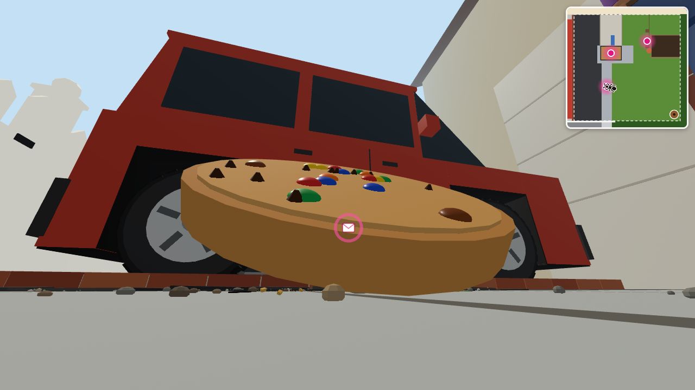
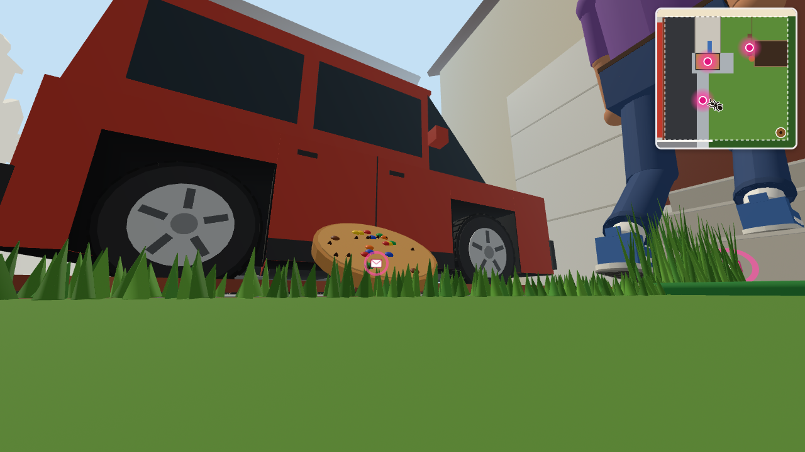
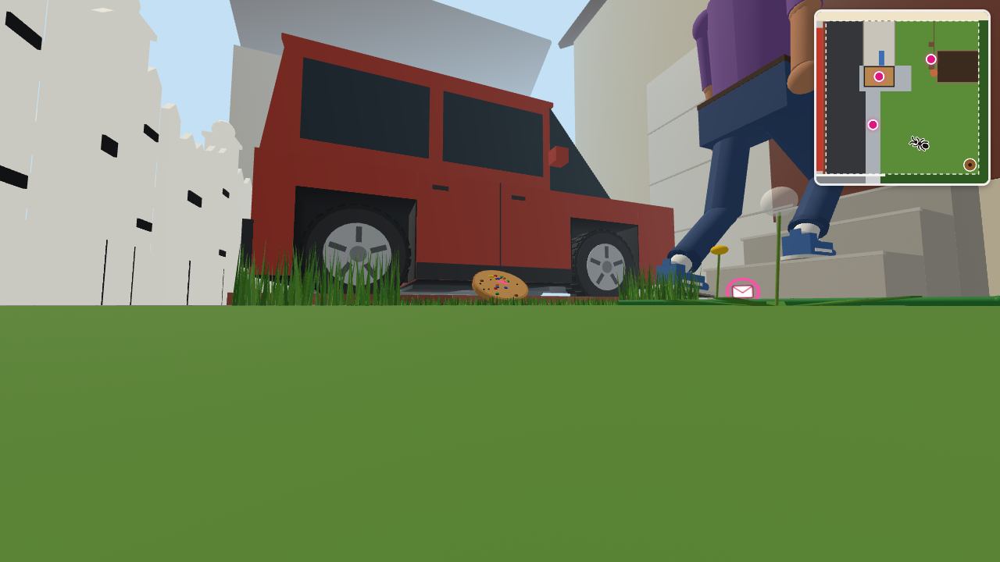

실제 가상 세계에서 크래커 자리에 쿠키를 놓고 찍은 화면입니다. 돌에 비스듬히 걸쳐 윗면이 개미 쪽을 봅니다.

바로 앞에서 — 빨강·파랑·노랑·초록·주황·갈색 M&M과 초콜릿 칩

조금 떨어져서 — 잔디 너머로 쿠키가 확실히 보임

개미집에서 반쯤 왔을 때 — 멀리서도 둥근 쿠키 모양이 보임
카드 글도 쿠키로 바뀝니다
제목: A Cracker Too Big → A Cookie Too Big
첫 문장: You found a cracker on the sidewalk. → You found a cookie on the sidewalk.
나머지 글, 질문("How could you help ants move heavy food home faster?")은 그대로.
함께 바뀌는 것: 분홍 고리를 쿠키 위로 올림 · 쿠키 근처 잔디만 짧게 · 부딪힘 범위를 둥근 쿠키에 맞춤 · 미니맵의 표시도 둥글게 · 주변 부스러기를 쿠키 색으로. 그대로: 위치(보도), 걷는 속도, 다른 장소, 안내 페이지(배경 사진은 나중에 새로 찍을 수 있음).